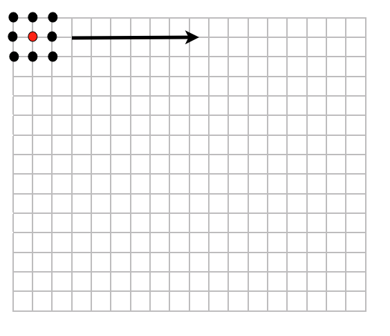
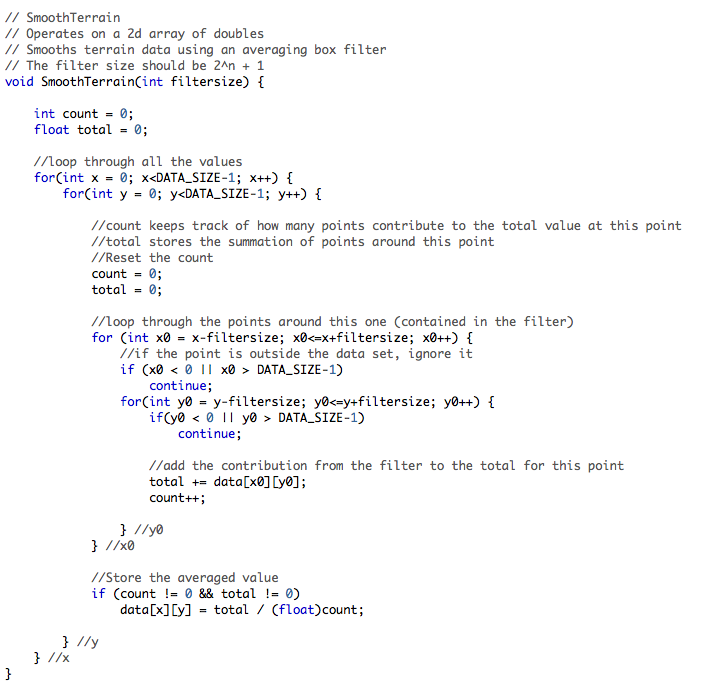
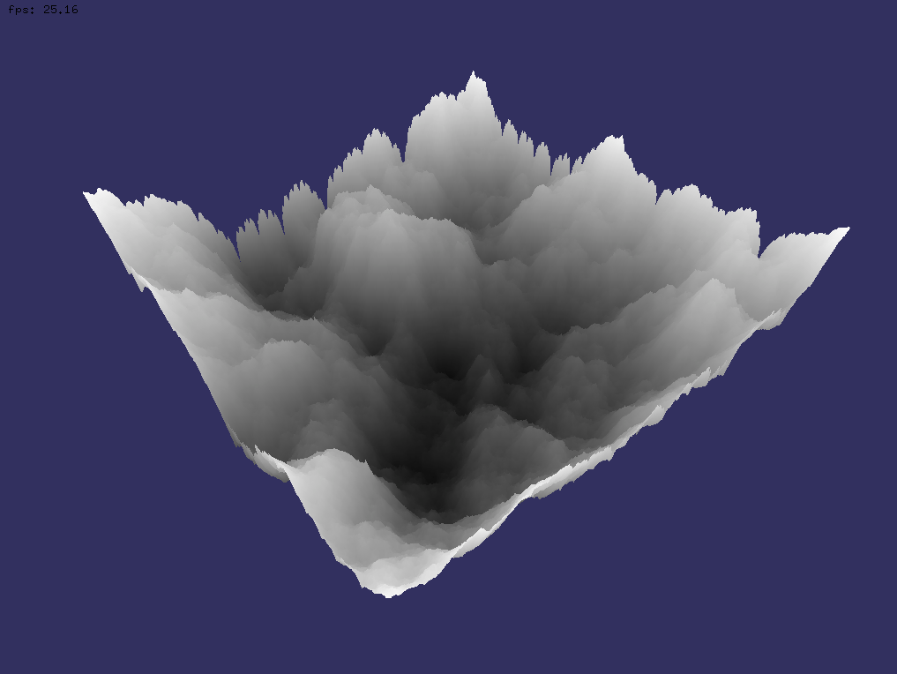
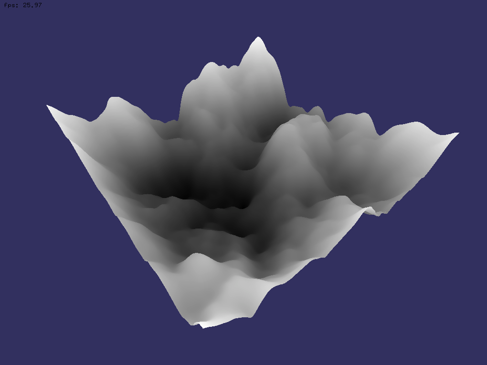
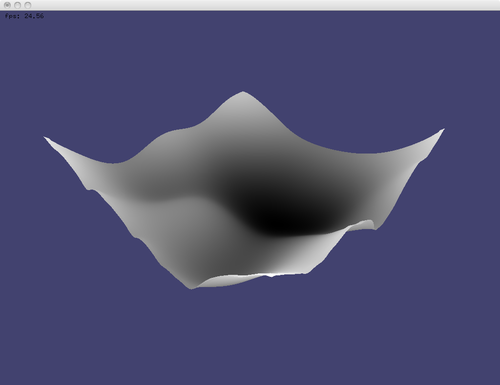

The terrain generated in the last post was quite bumpy, what if I want smooth rolling hills or something that isn't quite so bumpy. There are two options here - you can either play around with the diamond-square weights and method of generating the terrain or you can smooth the result. The method I have chosen is a mean (average) filter also known as a box filter. The filter works by moving a square (say 3x3) across the terrain values taking the average of the pixels surrounding it to give the center value an averaged result.
The box filter size is usually a power of 2 + 1. Some examples are 3x3, 5x5, 9x9, etc. The image below shows how the filter works. The 3x3 square is slid over the terrain averaging it's neighbours. The center pixel is also taken into account.

Ok, time for some source code. The following code loops over the 2d array of pixels, the inner loop loops from the position minus the filter size to the position plus the filter size in each dimension, this allows us to have an arbitrary filter size without hand coding the weights and positions of each pixel in the filter. The count variable keeps track of how many points contribute to the average and we ignore edge cases meaning that if a point in the filter is outside the array, it gives no contribution to the average.

So the results for running this on the terrain in the previous post are as follows first with no smoothing, then with a box size of 9x9:


And of course the smoothing can be iterated over many times. Here is the same filter size as above, but repeated 50 times.

Other useful links:
Band filtering example : http://www.lighthouse3d.com/opengl/terrain/index.php3?smoothing Filter functions: http://www.wheatchex.com/projects/filters/